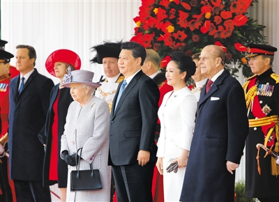

习近平出席英国
女王伊丽莎白二世举行的欢迎仪式
 十月二十日。对英国进行国事访问的国家主席习近平出席英国女王伊丽莎白二世在伦敦骑兵检阅场举行的隆重欢迎仪式。新华社记者
新华社记者
10月20日，对英国进行国事访问的国家主席习近平出席了英国女王伊丽莎白二世在伦敦骑兵检阅场举行的隆重欢迎仪式。
秋日的伦敦天高气爽，叠翠流金。当天中午，英国威尔士亲王查尔斯王储和夫人卡米拉到习近平下榻的饭店，迎请习近平和夫人彭丽媛。
12时10分许，习近平夫妇在查尔斯王储夫妇陪同下抵达骑兵检阅场皇家检阅台。按英国皇家最高规仪，伦敦塔桥和格林公园分别鸣放62响和41响礼炮。
习近平夫妇登上皇家检阅台，伊丽莎白二世女王和丈夫菲利普亲王迎接。仪仗队敬礼，军乐队高奏中国国歌。在菲利普亲王陪同下，习近平检阅了仪仗队。
女王大伦敦代表奥利沙、首相卡梅伦、内政大臣梅、国防参谋长霍顿、伦敦金融城市长叶雅伦、威斯敏斯特市长弗莱特等出席欢迎仪式。
12时10分许，习近平夫妇在查尔斯王储夫妇陪同下抵达骑兵检阅场皇家检阅台。按英国皇家最高规仪，伦敦塔桥和格林公园分别鸣放62响和41响礼炮。
习近平夫妇登上皇家检阅台，伊丽莎白二世女王和丈夫菲利普亲王迎接。仪仗队敬礼，军乐队高奏中国国歌。在菲利普亲王陪同下，习近平检阅了仪仗队。
12时10分许，习近平夫妇在查尔斯王储夫妇陪同下抵达骑兵检阅场皇家检阅台。按英国皇家最高规仪，伦敦塔桥和格林公园分别鸣放62响和41响礼炮。
习近平夫妇登上皇家检阅台，伊丽莎白二世女王和丈夫迎接。仪仗队敬礼，军乐队高奏中国国歌。在菲利普亲王陪同下，习近平检阅了仪仗队。